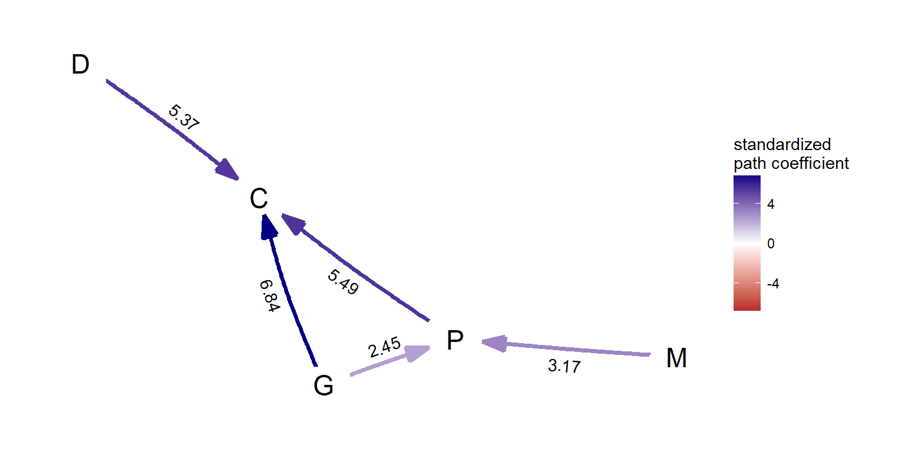

Comparing causal models of binary traits using phylopath
Wouter van der Bijl
2017-07-06
Introduction
This vignette gives a short example of how PPA can be applied to binary data sets using phylopath. A longer example with more explanation of the code can be found in the other vignette, “intro to phylopath”.
Important notes:
There has been some discussion concerning how to best perform logistic regression with phylogenetic correction. I take no position on this matter. This package uses
ape::binaryPGLMM, written by Anthony Ives. Read?ape::binaryPGLMMfor more information.phylopath’s accuracy is directly dependent on the accuracy of that method, and if you don’t trustape::binaryPGLMMyou should not trustphylo_path_binary.This method does not allow for the specification of different models of evolution, as
ape::binaryPGLMMdoes not support it. Since it is unclear to me whether it makes sense to mix different models of evolution while evaluating a single causal model, it is currently not possible to have causal models with mixed variable types. That is, forphylo_pathall variables are expected to be continuous and forphylo_path_binaryall variables should be binary.
If you have useful opinions or information on these points, feel free to contact me.
Example analysis
Data and hypothesis
This recreates the analysis from the following paper:
Dey CJ, O’Connor CM, Wilkinson H, Shultz S, Balshine S & Fitzpatrick JL. 2017. Direct benefits and evolutionary transitions to complex societies. Nature Ecology & Evolution. 0137.
This is, to my knowledge, the first study to employ PPA on binary traits.
The study investigates the evolution of cooperative breeding in cichlids. In short (my summary), there has been intense debate about what factors drive species towards evolving systems of cooperative breeding. Many have argued and provided evidence in birds and mammals that cooperative breeding chiefly evolves when inbreeding is high and helpers gain indirect fitness benefits (i.e. kin selection). However, a non-exclusive alternative hypothesis is that direct benefits due to ecological factors may be important and provide direct benefits. Therefore, both hypotheses should be considered at the same time.
The data is included in this paper as cichlids and cichlids_tree
It contains five variables:
- C: Cooperative breeding, cooperative or non-cooperative.
- M: Mating system, monogamous or non-monogamous.
- P: Parental care, maternal or biparental.
- G: Social grouping, grouping or non-grouping.
- D: Diet, piscivore or non-piscivore.
Under the indirect fitness hypothesis, monogamy is expected to be a major driver of cooperative breeding, while group living, biparental care and diet type may be important contributors towards a direct benefits scenario.
Defining the causal models
Following the paper in question, we define 12 putative causal models.
library(phylopath)
models <- list(
A = DAG(C ~ M + P + G + D),
B = DAG(C ~ P + G + D, M ~ M),
C = DAG(C ~ P + G + D, P ~ M),
D = DAG(C ~ P + G + D, M ~ P, G ~ P),
E = DAG(C ~ P + G + D, P ~ M, G ~ P),
F = DAG(C ~ P + G + D, P ~ M + G),
G = DAG(C ~ P + G + D, M ~ P, P ~ G),
H = DAG(C ~ P + G + D, M ~ P),
I = DAG(C ~ P + G + D, M ~ M, G ~ P),
J = DAG(C ~ P + G, M ~ P, G ~ D),
K = DAG(C ~ P + G, P ~ M, G ~ D),
L = DAG(C ~ M + P + G + D, P ~ M + G)
)
plot_model_set(models)
Comparing the models
Now that we have our models, data and a tree, we can compare the models using phylo_path_binary
Note: ape::binaryPGLMM is very slow. This code takes about 3 minutes to run on my machine. Therefore, I recommend making use of the parallel argument to speed things up. Depending on the situation, this can help a lot.
cichlids_results <- phylo_path_binary(models, cichlids, cichlids_tree, parallel = "SOCK")## 15 rows were dropped because they contained NA values.## Pruned tree to drop species not included in dat.Note that two messages are printed. This is because there are missing values in our data set that are first being removed. Also, since the tree includes species for which data is missing, the tree had to be pruned. This is done automatically with a message to the user. You should check whether the amount of data removed is correct.
summary(cichlids_results)## model k q C p CICc delta_CICc l w
## 1 F 5 10 7.099 0.716 32.215 0.000 1.000 0.541
## 2 L 4 11 6.777 0.561 35.062 2.847 0.241 0.130
## 3 G 5 10 10.105 0.431 35.221 3.006 0.223 0.120
## 4 D 5 10 10.233 0.420 35.349 3.134 0.209 0.113
## 5 E 5 10 10.922 0.364 36.038 3.822 0.148 0.080
## 6 C 6 9 19.313 0.081 41.404 9.188 0.010 0.005
## 7 H 6 9 19.648 0.074 41.739 9.523 0.009 0.005
## 8 J 6 9 21.219 0.047 43.310 11.095 0.004 0.002
## 9 I 6 9 22.158 0.036 44.249 12.033 0.002 0.001
## 10 K 6 9 22.419 0.033 44.510 12.295 0.002 0.001
## 11 B 7 8 28.200 0.013 47.400 15.185 0.001 0.000
## 12 A 6 9 27.878 0.006 49.969 17.753 0.000 0.000We see that model F is the best supported model. This model notably does not include a link between monogamy and cooperative breeding, giving support to the direct benefits hypothesis.
Evaluating variable importance
Now that we have selected F as our best model, we still have three factors that affect cooperative breeding: diet, social grouping and parental care. Which one is more important? For this we can fit the model and look at magnitude of the coefficients. In this case, since we want to use the best model we use the function best(). One can use choice() to choose any arbitrary model, or average() to average over several models.
best_cichlids <- best(cichlid_results)To see the individual coefficients and their standard errors, simply print best_cichlids:
best_cichlids## $coef
## M D G P C
## M 0 0 0 3.165581 0.000000
## D 0 0 0 0.000000 5.366627
## G 0 0 0 2.452958 6.840557
## P 0 0 0 0.000000 5.494507
## C 0 0 0 0.000000 0.000000
##
## $se
## M D G P C
## M 0 0 0 0.9212517 0.000000
## D 0 0 0 0.0000000 3.388728
## G 0 0 0 0.8482509 2.131857
## P 0 0 0 0.0000000 2.581734
## C 0 0 0 0.0000000 0.000000
##
## attr(,"class")
## [1] "binary_fitted_DAG" "fitted_DAG"But we can also plot the final model:
plot(best_cichlids, algorithm = 'kk')
It appears that social grouping is a slightly more important than diet and biparental care.